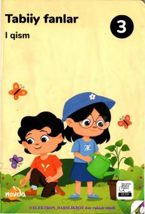

3T3-sinf o'quvchilari uchun tabiatshunoslik fanidan birinchi qism darslik.
Ushbu darslik umumiy o'rta ta'lim maktablarining 3-sinf o'quvchilari uchun mo'ljallangan bo'lib, tabiat hodisalari, o'simliklar, hayvonlar va atrof-muhit haqida boshlang'ich bilimlarni beradi. Kitob o'quvchilarning tabiat va moddalar haqidagi qiziqishlarini oshirishga hamda ularni ilmiy izlanishlarga yo'naltirishga xizmat qiladi.